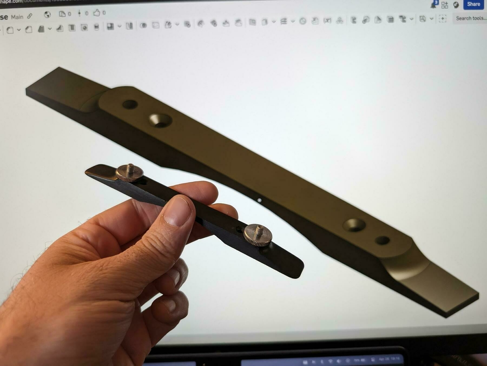
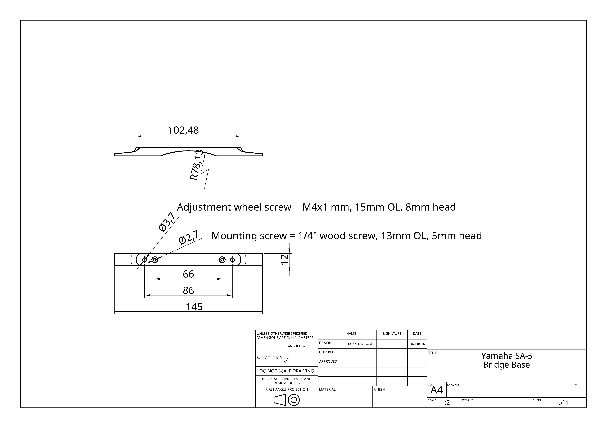
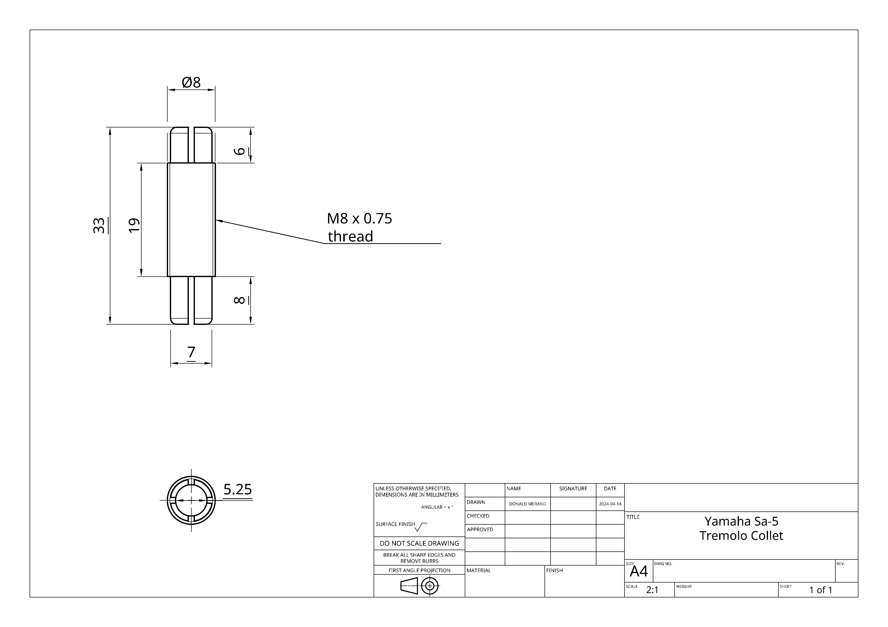
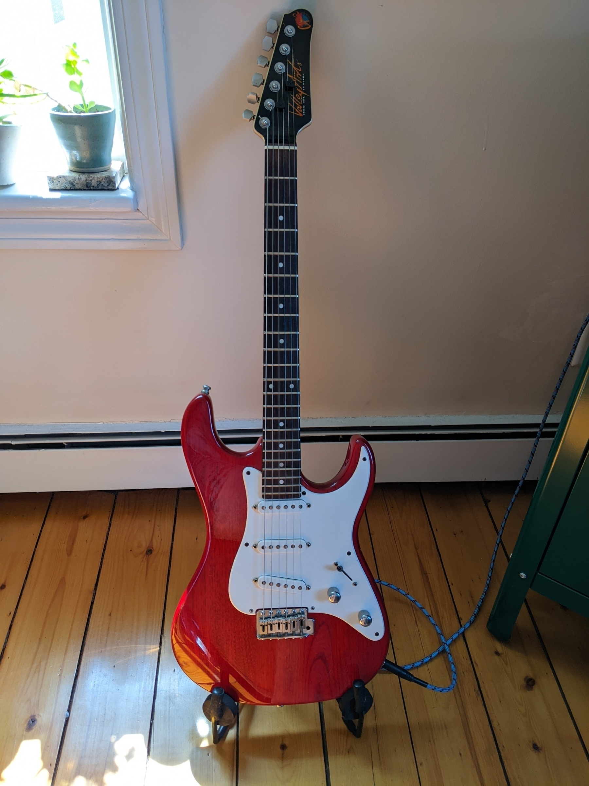
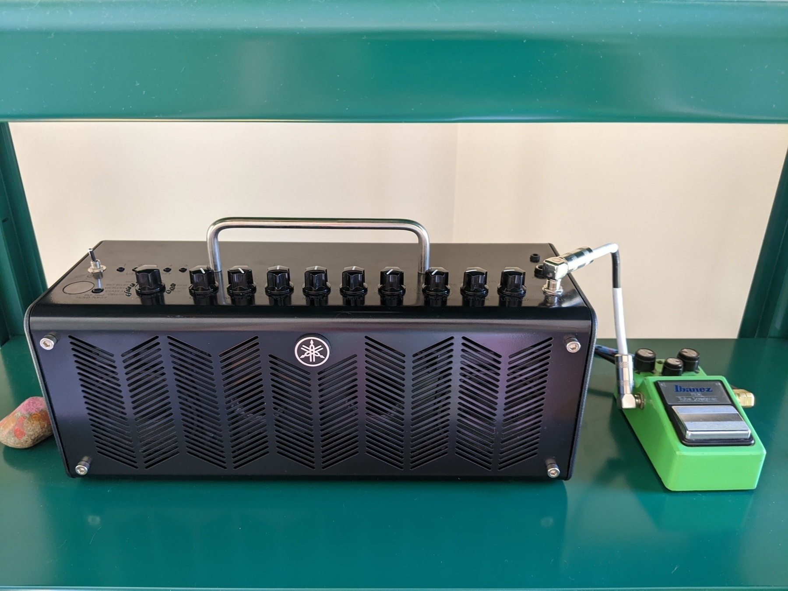
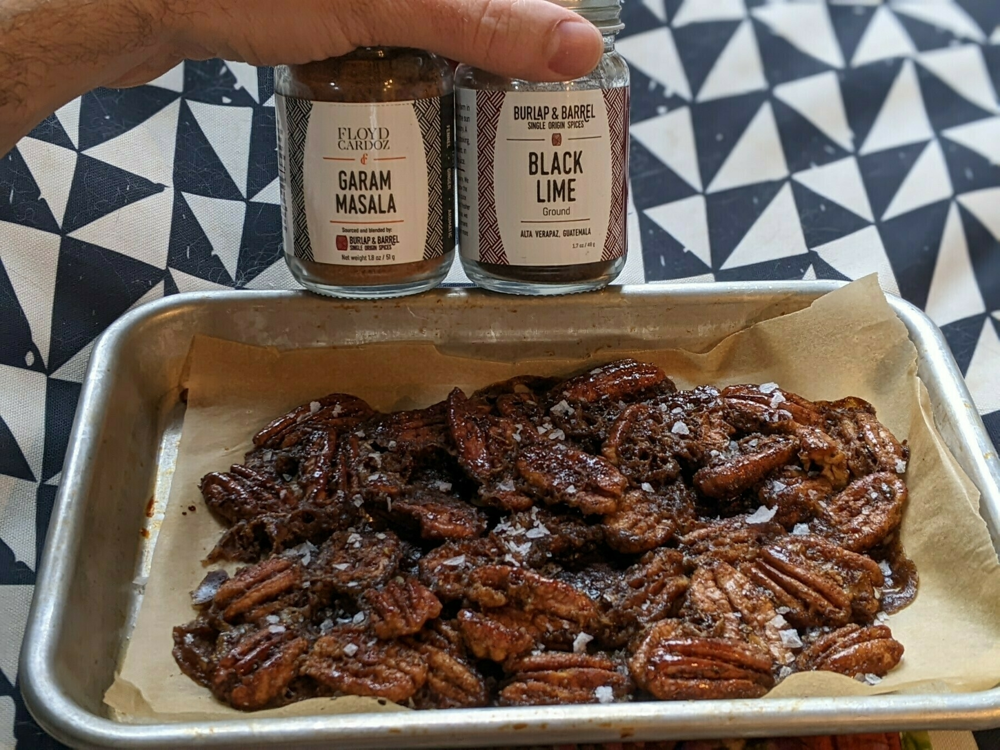
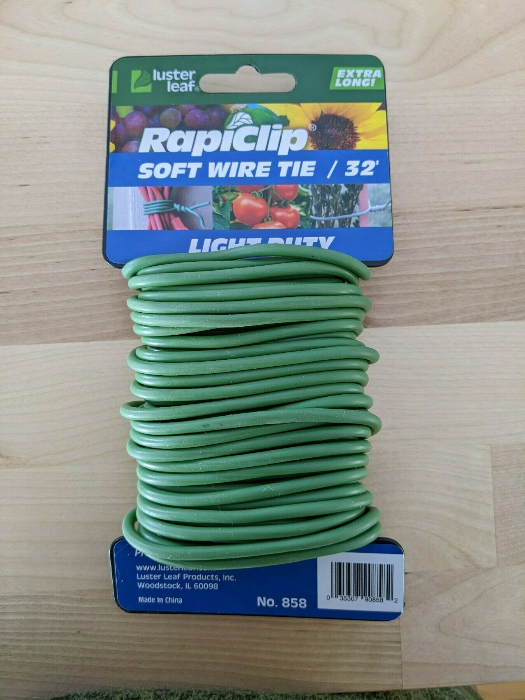
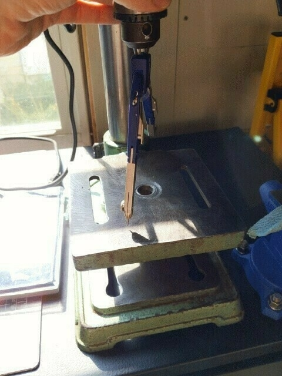
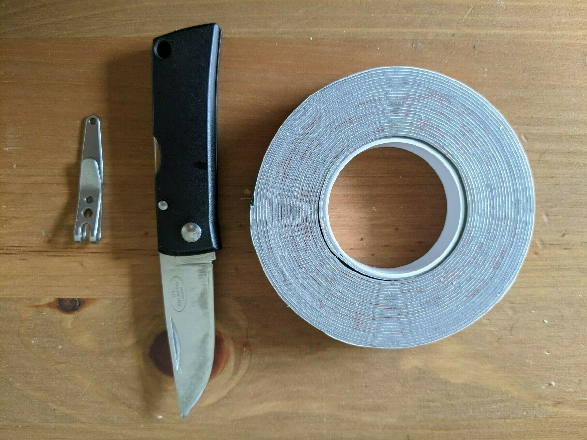
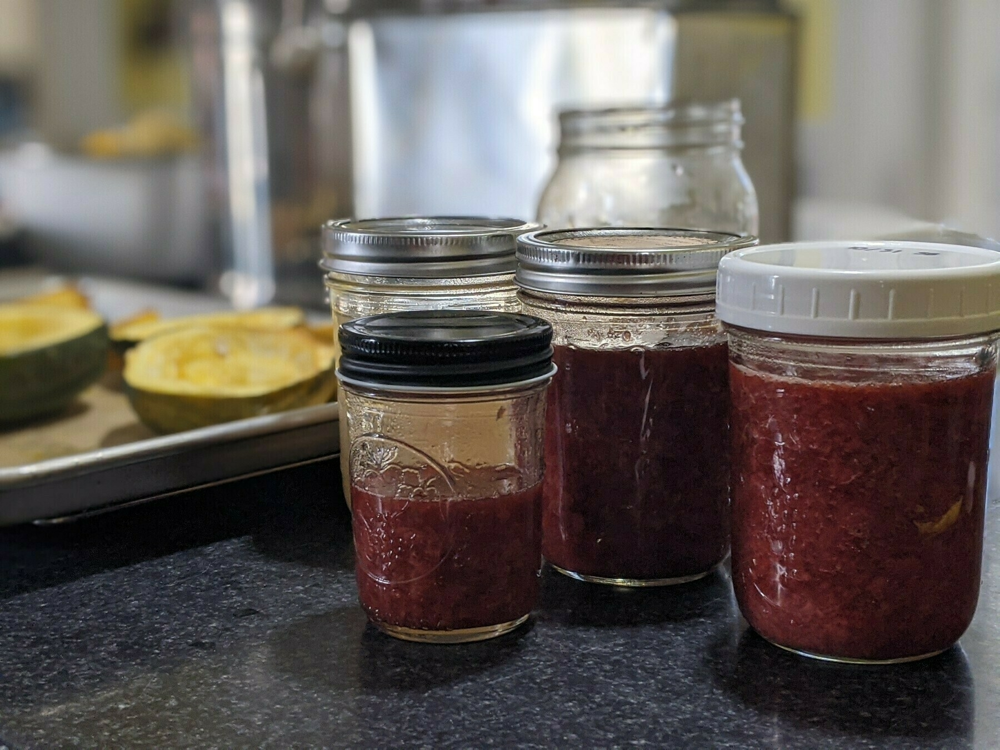

Yamaha SA-5 / SA-30 / SA-50 Bridge Dimensions
As I restore my Yamaha SA-5 guitar, I’ve been taking dimensions of some of the harder-to-find parts so that they can be more easily re-created by folks in similar situations. It’s hard to find these parts on auction sites, but you can 3d print a facsimile fairly easily or use the model as a reference for hand re-creation.
Today I made a CAD model and drawing of the base of the bridge. The bridge is a two-piece setup commonly found on archtop guitars, though the dimensions of this bridge are not common on modern guitars to my knowledge. This bridge is also pinned to the guitar with wood screws, which makes the dimensions particularly important.
Here’s a picture of the real bridge base with the adjustment screws + thumbwheel installed, as well as some dimensions from the CAD drawing. I recommend playing around with the 3d model in Onshape to get a feel for the various dimensions.

Yamaha SA-5 / SA-30 / SA-50 / SG-2 / SG-3 Tremolo Collet
I recently acquired a 1966 Yamaha SA-5. It can be hard to find parts for these guitars. In particular, the tremolo arm and collet always seem to be missing. Mine has the collet but was missing the tremolo arm.
I found that this 5mm push-in replacement tremolo arm is the proper dimensions, provided that the collet is well-adjusted.
I also made a CAD model and drawing of the dimensions of my collet, in case folks are motivated to make their own. I have zero experience with CAD drawings, but hopefully these dimensions will be sufficient information.

These videos are an excellent source of information about how these assemblies go together. In particular for the collet, it threads into the tremolo base and is held in place by a jam nut (threaded M8 x 0.75). The tremolo arm itself slides in and is caught by the bottom half of the collet (tightened slightly to keep it from passing through). The nut that holds the tremolo arm in place has an internal M8 x 0.75 thread, but has a draft/taper internally that causes the top half of the collet to tighten on the arm.
I loved this
In a world where evidence and logic are not respected in public debate, Hinton imagines that systems operating without evidence or logic could become our overlords by becoming superhumanly persuasive, imitating and supplanting the worst kinds of political leader.
Humans are just intelligent enough to be confident but not quite intelligent enough to have empathy and integrate with our world instead of destroying it. We are so self-centered and hubristic that we believe our intelligence is the apex of intelligence when it’s actually the modus operandi of a cancer at a larger scale.
Would a true intelligence destroy the world it inhabits? Would a true intelligence not integrate and create balance with its world? Would humans even recognize a true intelligence if we saw one?
Output before Input EXTRA POST #301 - 2022.11.26
🎵 Output before Input #301 - 2022.11.12
Sometimes things just happen
Output before Input #300 - 2022.11.12
🎵 Output before Input #300 - 2022.11.12
Reprise through new eyes
Output before Input #298 - 2022.11.11
🎵 Output before Input #298 - 2022.11.11
Light shining through the cracks in your carefully-built wall
Output before Input #297 - 2022.11.10
🎵 Output before Input #297 - 2022.11.10
First time working the parachute
Output before Input #294 - 2022.11.08
🎵 Output before Input #294 - 2022.11.08
Walking through a big empty skyscraper
Output before Input #293 - 2022.11.07
🎵 Output before Input #293 - 2022.11.07
(melody from my dream)
The slog it takes to make something look easy
Output before Input #290 - 2022.11.03
🎵 Output before Input #290 - 2022.11.03
(This one came straight out of my dream)
You don’t have to stumble and trip on this path, you can actually fly.
Output before Input #289 - 2022.11.01
🎵 Output before Input #289 - 2022.11.01
Gradually sinking into the earth
Output before Input #288 - 2022.10.31
🎵 Output before Input #288 - 2022.10.31
Scribbling in the margins
Output before Input #287 - 2022.10.30
🎵 Output before Input #287 - 2022.10.30
Feeling like a kid again
Output before Input #285 - 2022.10.27
🎵 Output before Input #285 - 2022.10.27
Receiving radio transmission
Output before Input #284 - 2022.10.24
🎵 Output before Input #284 - 2022.10.24
Riding a multidimensional bicycle
Output before Input #282 - 2022.10.22
🎵 Output before Input #282 - 2022.10.22
Devil on your shoulder
Output before Input #281 - 2022.10.21
🎵 Output before Input #281 - 2022.10.21
Sand going down the hopper
Output before Input #279 - 2022.10.18
🎵 Output before Input #279 - 2022.10.18
The edge of discomfort
Output before Input #278 - 2022.10.18
🎵 Output before Input #278 - 2022.10.18
This side of discomfort
Output before Input #275 - 2022.10.15
🎵 Output before Input #275 - 2022.10.15
Walking by their window and watching them dance
Output before Input #274 - 2022.10.14
🎵 Output before Input #274 - 2022.10.14
Who let the triangles into the square party?
Output before Input #273 - 2022.10.13
🎵 Output before Input #273 - 2022.10.13
Pulling a cart through mud
Output before Input #271 - 2022.10.11
🎵 Output before Input #271 - 2022.10.11
I don’t understand the dance of this people
Output before Input #269 - 2022.10.09
🎵 Output before Input #269 - 2022.10.09
Passing through the relaxis
Output before Input #268 - 2022.10.08
🎵 Output before Input #268 - 2022.10.08
Shivering even though its not cold
Output before Input #266 - 2022.10.06
🎵 Output before Input #266 - 2022.10.06
Do the same thing again but this time think “what if it were easy?”
Output before Input #265 - 2022.10.06
🎵 Output before Input #265 - 2022.10.06
It’s literally painful to cry
Output before Input #264 - 2022.10.03
🎵 Output before Input #264 - 2022.10.03
When you keep having to take off your sweater and put it back on again because every time the sun goes behind a cloud it drops 15 degrees
Output before Input #263 - 2022.10.02
🎵 Output before Input #263 - 2022.10.02
Hanging by fingers forgetting you have wings
Output before Input #260 - 2022.09.26
🎵 Output before Input #260 - 2022.09.26
Being home after years away
Output before Input #254 - 2022.09.20
🎵 Output before Input #254 - 2022.09.20
Taking off the old rags to wash in the river on a sunny day
Output before Input #253 - 2022.09.19
🎵 Output before Input #253 - 2022.09.19
Friends drop by when you’re feeling lonely
Output before Input #250 - 2022.09.15
🎵 Output before Input #250 - 2022.09.15
The dead rise just to dance down the street
Output before Input #249 - 2022.09.15
🎵 Output before Input #249 - 2022.09.15
Pushing everybody away
Output before Input #247 - 2022.09.14
🎵 Output before Input #247 - 2022.09.14
Doubts under the surface
Output before Input #246 - 2022.09.13
🎵 Output before Input #246 - 2022.09.13
Give the best you’ve got, even if it’s not good enough.
Output before Input #245 - 2022.09.12
🎵 Output before Input #245 - 2022.09.12
It turns out you never had to hold your breath at all
Output before Input #244 - 2022.09.12
🎵 Output before Input #244 - 2022.09.12
Looking at the sky from under the water
I’m here say to that I really love my Thinkpad X230, which at this point is 9 years old but is just so great.
Output before Input #241 - 2022.09.08
🎵 Output before Input #241 - 2022.09.08
My throat and breathing were stuck at E♭; singing along with this helped.
Output before Input #239 - 2022.09.06
🎵 Output before Input #239 - 2022.09.06
Stuck in the walls looking out
Output before Input #237 - 2022.09.04
🎵 Output before Input #237 - 2022.09.04
Juggling + people keep tossing you knives
Output before Input #236 - 2022.09.03
🎵 Output before Input #236 - 2022.09.03
Record needle dragging over aged skin
Output before Input #235 - 2022.08.27
🎵 Output before Input #235 - 2022.08.27
Running across the surface of the water
Output before Input #234 - 2022.08.27
🎵 Output before Input #234 - 2022.08.27
Don’t be afraid of being alone
Output before Input #232 - 2022.08.26
🎵 Output before Input #232 - 2022.08.26
Siblings working together
Output before Input #229 - 2022.08.23
🎵 Output before Input #229 - 2022.08.23
Loosen up the old knots
Output before Input #228 - 2022.08.22
🎵 Output before Input #228 - 2022.08.22
Bees get aggressive late in the season
Output before Input #227 - 2022.08.19
🎵 Output before Input #227 - 2022.08.19
Heat rising from the road
Output before Input #226 - 2022.08.18
🎵 Output before Input #226 - 2022.08.18
Pass the goddamned butter
Output before Input #225 - 2022.08.17
🎵 Output before Input #225 - 2022.08.17
Taunts that still haunt
I just realized reading Ben Thompson that the Young Girl’s Illustrated Primer from Neal Stephenson’s The Diamond Age is going to be the norm in social media in 5-10 years. It seemed so fantastic and unimaginable at the time.
Output before Input #220 - 2022.08.08
🎵 Output before Input #220 - 2022.08.08
The night stares back at you
Output before Input #218 - 2022.08.06
🎵 Output before Input #218 - 2022.08.06
Punching walls because it feels good
Output before Input #216 - 2022.08.05
🎵 Output before Input #216 - 2022.08.05
Getting weird when nobody’s watching
Output before Input #215 - 2022.08.05
🎵 Output before Input #215 - 2022.08.05
Getting the chores done
Output before Input #213 - 2022.08.04
🎵 Output before Input #213 - 2022.08.04
Repairing the phase shift array
Output before Input #212 - 2022.08.03
🎵 Output before Input #212 - 2022.08.03
Hovering around the edge of the slow dance
Output before Input #211 - 2022.08.01
🎵 Output before Input #211 - 2022.08.01
The food one universe over tastes different
Output before Input #208 - 2022.07.31
🎵 Output before Input #208 - 2022.07.31
Walking a new city before anybody else is awake
Output before Input #205 - 2022.07.25
🎵 Output before Input #205 - 2022.07.25
Heat rising off the road melts your makeup
Output before Input #204 - 2022.07.24
🎵 Output before Input #204 - 2022.07.24
In my dream this was a song I was singing called “On Thin Ice”.
Output before Input #203 - 2022.07.22
🎵 Output before Input #203 - 2022.07.22
Shag carpet in really good condition
Output before Input #202 - 2022.07.19
🎵 Output before Input #202 - 2022.07.19
Each step on the sidewalk makes more sidewalk.
Output before Input #201 - 2022.07.16
🎵 Output before Input #201 - 2022.07.16
Scratching fingernails on the wall looking for a crack
Output before Input #199 - 2022.07.15
🎵 Output before Input #199 - 2022.07.15
300-lb bruiser whose best friend is a rat named Twinkles
Output before Input #197 - 2022.07.14
🎵 Output before Input #197 - 2022.07.14
Juggling seven flaming knives
Output before Input #196 - 2022.07.13
🎵 Output before Input #196 - 2022.07.13
Multiple personalities prom
Output before Input #195 - 2022.07.12
🎵 Output before Input #195 - 2022.07.12
Groove virus spreads quickly and manifests differently in each host.
Output before Input #194 - 2022.07.12
🎵 Output before Input #194 - 2022.07.12
Riding a motorcycle away from an explosion and into the sunset
Output before Input #193 - 2022.07.11
🎵 Output before Input #193 - 2022.07.11
Projector malfunction at the theater
Output before Input #192 - 2022.07.07
🎵 Output before Input #192 - 2022.07.07
Snap-dancing to the ice cream shop with your crew
Output before Input #191 - 2022.07.07
🎵 Output before Input #191 - 2022.07.07
Sashaying through the thrift store
Output before Input #190 - 2022.07.06
🎵 Output before Input #190 - 2022.07.06
Foot on the accelerator
Output before Input #189 - 2022.07.06
🎵 Output before Input #189 - 2022.07.06
Pulled in every direction
Output before Input #188 - 2022.07.05
🎵 Output before Input #188 - 2022.07.05
Trying to play the concerto over the fireworks
Output before Input #187 - 2022.07.04
🎵 Output before Input #187 - 2022.07.04
Rolling along the walls
Output before Input #186 - 2022.07.03
🎵 Output before Input #186 - 2022.07.03
Conducting the honking duck orchestra
Output before Input #185 - 2022.07.03
🎵 Output before Input #185 - 2022.07.03
Going back into the house because you forgot your keys montage
Output before Input #184 - 2022.07.02
🎵 Output before Input #184 - 2022.07.02
Mosquito under the net
Output before Input #183 - 2022.07.02
🎵 Output before Input #183 - 2022.07.02
Regular guy on the beach
Output before Input #180 - 2022.06.30
🎵 Output before Input #180 - 2022.06.30
Swagger but then you slip
Output before Input #179 - 2022.06.29
🎵 Output before Input #179 - 2022.06.29
Don’t open your eyes or the dream will fade.
Output before Input #178 - 2022.06.28
🎵 Output before Input #178 - 2022.06.28
Sunset over the landfill.
Output before Input #177 - 2022.06.27
🎵 Output before Input #177 - 2022.06.27
Starting the day with a lullaby.
Output before Input #176 - 2022.06.26
🎵 Output before Input #176 - 2022.06.26
Waiting for appetizers
Output before Input #175 - 2022.06.23
🎵 Output before Input #175 - 2022.06.23
This rhythm seems to be stuck deep in my hands.
Output before Input #173 - 2022.06.22
🎵 Output before Input #173 - 2022.06.22
I had a dream that my teeth kept falling out because they’d secretly been dentures and I hadn’t known. I think it influenced this sketch - centered around an unstable tonal foundation.
Output before Input #172 - 2022.06.22
🎵 Output before Input #172 - 2022.06.22
Hitting “snooze” when you get the day off
Output before Input #171 - 2022.06.21
🎵 Output before Input #171 - 2022.06.21
Walking around town on a sunny day, waving to all the neighbors
Output before Input #170 - 2022.06.21
🎵 Output before Input #170 - 2022.06.21
One of the things I love about guitar is how much you can do/imply with just three notes (in this case, one melody and two harmony) and two hands. I used to be a maximalist with harmony but lately I’ve been exploring how much the ear will fill in by itself.
For those who may be curious, this is my main guitar setup - the rig I’ve used for all of the Output before Input recordings.
The guitar is a Valley Arts custom Strat clone. The amp is a Yamaha THR-10C with a chip-modded TS-9/808 tube screamer in front. I love this setup because the amp sounds amazing and I can record it direct to the computer using the “voice memo” app with minimal fuss.

Output before Input #169 - 2022.06.20
🎵 Output before Input #169 - 2022.06.20
A meditation on pacing
Output before Input #168 - 2022.06.19
🎵 Output before Input #168 - 2022.06.19
Guitar people love things that are tricky or sound tricky to play on the guitar. I think this piece is me making fun of myself for being that way.
Output before Input #167 - 2022.06.19
🎵 Output before Input #167 - 2022.06.19
There are actual power chords in there.
Output before Input #166 - 2022.06.16
🎵 Output before Input #166 - 2022.06.16
Flirting with what might be called atonality - intentionally seeking the thing right next to the thing that makes harmonic sense.
Output before Input #165 - 2022.06.16
🎵 Output before Input #165 - 2022.06.16
Drawn to this sweet melody, dropped and deconstructed in tone.
Output before Input #164 - 2022.06.14
🎵 Output before Input #164 - 2022.06.14
Felt better than it sounds.
Output before Input #163 - 2022.06.13
🎵 Output before Input #163 - 2022.06.13
When you feel tired + don’t want to wake up but your dreams keep getting weirder so you get up anyhow
Output before Input #162 - 2022.06.13
🎵 Output before Input #162 - 2022.06.13
This one feels like it’s about the struggle to keep things simple.
Output before Input #160 - 2022.06.12
🎵 Output before Input #160 - 2022.06.12
Aggressively pastoral - like walking through a field and tripping on a bunch of stones.
Output before Input #159 - 2022.06.10
🎵 Output before Input #159 - 2022.06.10
This sounds like having a beautiful, enjoyable day with chronic pain.
Output before Input #158 - 2022.06.07
🎵 Output before Input #158 - 2022.06.07
Sometimes you have to just, you know, do a friggin’ guitar solo on some blues.
Output before Input #157 - 2022.06.07
🎵 Output before Input #157 - 2022.06.07
A slow walk through the wilds of arpeggioland.
Output before Input #156 - 2022.06.07
🎵 Output before Input #156 - 2022.06.07
Bells tolling on a distant planet.
Output before Input #155 - 2022.06.05
🎵 Output before Input #155 - 2022.06.05
Early morning jog, and maybe seeing some people along the way.
Output before Input #153 - 2022.06.04
🎵 Output before Input #153 - 2022.06.04
This idea took only a few minutes to conceive but I had to practice it a bit before it was recordable, even as a sketch.
I get an image of a bird going crazy with its mating dance and the other bird hasn’t decided whether to join in yet.
Output before Input #152 - 2022.06.04
🎵 Output before Input #152 - 2022.06.04
This has a very Papa M / Album Leaf thing going on. It probably would have sounded less sloppy if I’d capo’ed it but that’s the price you pay for making it up as you go.
Output before Input #151 - 2022.06.02
🎵 Output before Input #151 - 2022.06.02
I guess I had one more in me this morning - though it’s not some mind-blowing idea that just had to burst forth into being. It feels more like a coda - or an interlude - if anything.
Output before Input #150 - 2022.06.02
🎵 Output before Input #150 - 2022.06.02
This started as me playing along with #149 the first time I played it back. Listening to it now, it suggests “part 2” of #149 in a lot of ways.
Output before Input #149 - 2022.06.02
🎵 Output before Input #149 - 2022.06.02
This has a bit of a Francisco Tárrega vibe.
Output before Input #148 - 2022.06.01
🎵 Output before Input #148 - 2022.06.01
This is a friend trying to get you to dance at the party.
Output before Input #147 - 2022.06.01
🎵 Output before Input #147 - 2022.06.01
Total blank-mind improv - restless + searching but never landing really.
Output before Input #146 - 2022.06.01
🎵 Output before Input #146 - 2022.06.01
Sometimes searching out dissonance is just too tempting. It seems to happen for me a lot with this sort of decaying distortion tone - the beats between the waves are so juicy.
Output before Input #145 - 2022.05.31
🎵 Output before Input #145 - 2022.05.31
Riffing on a chord progression that kind of goes its own way after a while. It’s nice when that happens and I can roll with it. I’ve noticed that I often struggle to roll with it and trip over my own feet.
Output before Input #144 - 2022.05.31
🎵 Output before Input #144 - 2022.05.31
The melody came quickly when I sat down; this is a simple exploration of what else goes with that melody.
Output before Input #143 - 2022.05.30
🎵 Output before Input #143 - 2022.05.30
Just a taste of an idea. I get the image of some kind of twisted Newton’s cradle.
Output before Input #142 - 2022.05.30
🎵 Output before Input #142 - 2022.05.30
There’s usually a lot of implied other music going on in my mind, but in the case of this sketch it feels particularly empty with the stuff that’s missing.
Output before Input #141 - 2022.05.29
🎵 Output before Input #141 - 2022.05.29
This one’s a bit late for International Drone Day but I hope I’ll be forgiven.
Output before Input #140 - 2022.05.29
🎵 Output before Input #140 - 2022.05.29
Try as I might this one got away from me.
Output before Input #139 - 2022.05.25
🎵 Output before Input #139 - 2022.05.25
It’s like secret room music from Mario Bros.
Output before Input #138 - 2022.05.24
🎵 Output before Input #138 - 2022.05.24
Today, this was more about the tone for me than the, you know, music.
Output before Input #137 - 2022.05.23
🎵 Output before Input #137 - 2022.05.23
Bringing in a touch of the Wes Montgomery.
Output before Input #136 - 2022.05.23
🎵 Output before Input #136 - 2022.05.23
Improvised jazz melody. I just realized this morning that for an improv sketch practice, I don’t really play all that much jazz.
Output before Input #135 - 2022.05.22
🎵 Output before Input #135 - 2022.05.22
I would say this is “out there,” but it might be more accurate to say it’s “in there.” The Hedvig Mollestad influence is strong.
Output before Input #133 - 2022.05.21
🎵 Output before Input #133 - 2022.05.21
Riff somewhere between AC/DC and Pinback
Output before Input #132 - 2022.05.21
🎵 Output before Input #132 - 2022.05.21
Single-note slippery climb
Output before Input #131 - 2022.05.20
🎵 Output before Input #131 - 2022.05.20
This one brings real confrontational energy.
Output before Input #130 - 2022.05.20
🎵 Output before Input #130 - 2022.05.20
Sweet + cinematic, tentative.
Output before Input #129 - 2022.05.19
🎵 Output before Input #129 - 2022.05.19
A simple exploration, which nonetheless managed to jump the rails a bit.
Output before Input #128 - 2022.05.18
🎵 Output before Input #128 - 2022.05.18
This sketch isn’t sure what it wants to be when it grows up.
Output before Input #127 - 2022.05.17
🎵 Output before Input #127 - 2022.05.17
I think the theme here is “maintaining consistency” and how some days it’s easy and other days it’s all you can do.
Output before Input #126 - 2022.05.14
🎵 Output before Input #126 - 2022.05.14
Messy feelings this morning
Output before Input #125 - 2022.05.13
🎵 Output before Input #125 - 2022.05.13
Trudge through the sludge
Output before Input #124 - 2022.05.12
🎵 Output before Input #124 - 2022.05.12
I love the style of outlining melody that guitarists like Celestine Ukwu, Ray Phiri, or Ebo Taylor play. It sounds upbeat, but I find it quite a challenge to improvise at tempo and keep that feeling.
Output before Input #123 - 2022.05.10
🎵 Output before Input #123 - 2022.05.10
Sometimes I have a plan when I hit “record” but this one was a “hit record + see what comes out” moment.
Output before Input #122 - 2022.05.10
🎵 Output before Input #122 - 2022.05.10
Both hands on the fretboard this morning - I must have looked like Picasso’s guitarist.
Output before Input #121 - 2022.05.08
🎵 Output before Input #121 - 2022.05.08
Maybe it’s just me but I’m always amazed at how one instrument can play multiple sonic roles and the ear will fill things in with enough hints.
Output before Input #120 - 2022.05.08
🎵 Output before Input #120 - 2022.05.08
This makes me think of the old Latif Learned work.
Output before Input #119 - 2022.05.06
🎵 Output before Input #119 - 2022.05.06
A chord study. I tried a bunch of stuff this morning but it all came out so unfocused that it was unusable. It’s interesting how much of a window into my psyche this process has been.
Output before Input #118 - 2022.05.04
🎵 Output before Input #118 - 2022.05.04
This makes me think of riding on the train.
Output before Input #117 - 2022.05.03
🎵 Output before Input #117 - 2022.05.03
Full-on free-association. I was trying not to follow any of my patterns for too long.
Output before Input #116 - 2022.05.03
🎵 Output before Input #116 - 2022.05.03
I can’t stay away from the degraded I IV V harmonies.
Output before Input #115 - 2022.05.03
🎵 Output before Input #115 - 2022.05.03
Sinister beachside / desert situation (or is it?)
Output before Input #114 - 2022.05.02
🎵 Output before Input #114 - 2022.05.02
This is pretty much my default improv state - though kind of raw + sloppy today.
Output before Input #113 - 2022.05.02
🎵 Output before Input #113 - 2022.05.02
A cinematic theme, only too aggressive-sounding to be in the background.
Output before Input #111 - 2022.04.30
🎵 Output before Input #111 - 2022.04.30
Something like a deconstructed/degraded Foo Fighters riff.
Output before Input #110 - 2022.04.29
🎵 Output before Input #110 - 2022.04.29
Navigating a labyrinth and not ever really finding the center.
Feeling like a tech wizard for figuring out custom queries in Logseq that dynamically pull questions from my daily journals into meeting note pages for my team members. #thenerdiest
Output before Input #109 - 2022.04.28
🎵 Output before Input #109 - 2022.04.28
I played a lot of Pink Floyd in my youth, so sometimes the David Gilmour vibe comes out a bit.
Output before Input #108 - 2022.04.27
🎵 Output before Input #108 - 2022.04.27
Countermelody invented from the bottom up.
Output before Input #107 - 2022.04.27
🎵 Output before Input #107 - 2022.04.27
Harmony invented from the top down.
Output before input #106 - 2022.04.26
🎵 Output before Input #106 - 2022.04.26
I heard somewhere that The Books were so-named because their music evolved like a book instead of being repetitive from one end of a song to another. That idea really sticks with me, and influenced this sketch.
Output before Input #105 - 2022.04.25
🎵 Output before Input #105 - 2022.04.25
I’ll call this one “Surf’s Up Sonata”
Output before Input #104 - 2022.04.24
🎵 Output before Input #104 - 2022.04.24
Getting some Don Henley vibes this morning.
Output before Input #103 - 2022.03.23
🎵 Output before Input #103 - 2022.04.23
Let your body relax and let the changing meter just carry you awayyyyy
Output before Input #102 - 2022.04.22
🎵 Output before Input #102 - 2022.04.22
Some guitar heroics for a Friday.
Output before Input #101 - 2022.04.21
🎵 Output before Input #101 - 2022.04.21
This is what the inside of my head sounds like this morning. So much going on in there, it’s hard to calm down - kind of all over the place.
I’m pleased today that I got to my 100th guitar sketch in the Output before Input project. I might celebrate the occasion by making some sort of interactive online museum of what’s come thus far.
Output before Input #100 - 2022.04.20
🎵 Output before Input #100 - 2022.04.20
I don’t know how many of these I thought I’d make, but 100 seemed like an outer bound when I started. How many ideas can one person have? I feel like I’ve barely scratched the surface.
Output before Input #99 - 2022.04.19
🎵 Output before Input #99 - 2022.04.19
Feeling a bit tender and humbled this morning.
Output before Input #98 - 2022.04.18
🎵 Output before Input #98 - 2022.04.18
This is some kind of jazz rock outland/parallel universe version of #96 (same morning, different take).
Output before Input #97 - 2022.04.18
🎵 Output before Input #97 - 2022.04.18
Same “seed” idea + chords as #96 (same morning), but taken in a chunkier direction.
Output before Input #96 - 2022.04.18
🎵 Output before Input #96 - 2022.04.18
I ended up recording three very different things this morning - I’m either feeling like a high achiever or can’t make up my mind where to sit in the breakfast hall.
Output before Input #95 - 2022.04.17
🎵 Output before Input #95 - 2022.04.17
I call this a “Falcor” - a never-ending story of chord resolution that sounds like it goes on forever but in reality is just three chords. We have Philip Glass to thank for single-handedly making this kind of circular resolution a thing.
Output before Input #94 - 2022.04.17
🎵 Output before Input #94 - 2022.04.17
I tend to focus a lot on harmonic mobility in my own writing but there’s always something interesting about playing simple changes with a particular feeling.
Output before Input #93 - 2022.04.16
🎵 Output before Input #93 - 2022.04.16
This lick made me wish I were in better shape. I was listening to High Life Kings yesterday so that’s undoubtedly why I have this kind of pattern in my head today.
Output before Input #92 - 2022.04.14
🎵 Output before Input #92 - 2022.04.14
A groove like this sounds easy to play and isn’t technically difficult, but can be tough to sustain consistently.
Output before Input #91 - 2022.04.13
🎵 Output before Input #91 - 2022.04.13
Inverted power chord (fourth under fifth) structures keep showing up in my improvisation. They sound inherently less resolved and powerful, which lends a bit more dramatic tension.
Output before Input #90 - 2022.04.10
🎵 Output before Input #90 - 2022.04.10
Bonus exploration today. Feels like outer space to me.
Output before Input #89 - 2022.04.10
🎵 Output before Input #89 - 2022.04.10
I watched Metal Lords last night and something must have transferred to my subconscious.
I dug up this old project that I’ve never shared: the Padazzler™! It’s a custom-made table tennis paddle with LED lights that blink whenever a ball hits it. For some reason, I never posted it to Thingiverse, but maybe I will if I can find the source files.

Output before Input #88 (Take 3) - 2022.04.09
🎵 Output before Input #88 (Take 3) - 2022.04.09
3-part series today.
This is the final take of 3. It’s quite different from the other takes (ultimately), but it also feels to me like the most interesting ideas of the improv started to take shape and get stated with more clarity here.
Output before Input #88 (Take 2) - 2022.04.09
🎵 Output before Input #88 (Take 2) - 2022.04.09
3-part series today.
This was a second take after I flubbed the first one (see Take 1), and I really liked it. But I realized after I stopped playing that my computer had run out of battery somewhere in the middle. This is a partial recording…
Output before Input #88 (Take 1) - 2022.04.09
🎵 Output before Input #88 (Take 1) - 2022.04.09
3-part series today.
I started with this recording, but I felt like I flubbed it too many times to share. I did another take and my computer ran out of battery right in the middle of the take :/ Since they’re all quite different I thought maybe it would be interesting to share them all as a window into the improvisation process.
Output before Input #87 - 2022.04.08
🎵 Output before Input #87 - 2022.04.08
Sinister steps through silent streets.
Output before Input #86 - 2022.04.08
🎵 Output before Input #86 - 2022.04.08
I don’t know why these pop melodies keep coming out. I must be feeling nostalgic.
Output before Input #85 - 2022.04.07
🎵 Output before Input #85 - 2022.04.07
I awoke with a little minor-ninth embellishment in my head and built this groove from that.
Output before Input #84 - 2022.04.05
🎵 Output before Input #84 - 2022.04.05
A bit of mischief today.
Output before Input #83 - 2022.04.04
🎵 Output before Input #83 - 2022.04.04
Just a little comfortable pocket. Sometimes it’s nice to be in a comfortable pocket.
Output before Input #82 - 2022.04.03
🎵 Output before Input #82 - 2022.04.03
Believe it or not, I was meditating on the pelvic floor and this riff was inspired by that.
Output before Input #81 - 2022.04.02
🎵 Output before Input #81 - 2022.04.02
The major chords of a triumphant soul.
Output before Input #80 - 2022.04.01
🎵 Output before Input #80 - 2022.04.01
I woke up with this melody in my head, which means I almost certainly stole it from somewhere. I turned it into something rambling and comfortable, probably because moving on is in my head today.
Output before Input #79 - 2022.03.31
🎵 Output before Input #79 - 2022.03.31
Today I’m thinking about being a kid, sneaking around in the early morning, trying to be clandestine but occasionally failing in our enthusiasm.
Output before Input #78 - 2022.03.30
🎵 Output before Input #78 - 2022.03.30
I’m thinking about my dad this morning, who introduced me to Frank Zappa. Growing up, he always encouraged my weirder guitar tendencies and took the stewardship of my musical taste seriously.
When I think of Frank Zappa, I think of ironic doo-wop, I think of whole tone abrasive guitar solos, and I think of crazy riffs in crazy meter. Some of that comes out here.
Output before Input #77 - 2022.03.29
🎵 Output before Input #77 - 2022.03.29
Me cruising along, doing my thing and then I threw my back out. I think I could have seen it coming if I knew where to look, but of course we never can see the thing in our blind spot.
Output before Input #75 - 2022.03.28
🎵 Output before Input #75 - 2022.03.28
At least once a week I have a meditation/stretching “improv” practice. This sketch feels a bit like those improvisations - just following what shows up and seeing where it takes you.
Output before Input #74 - 2022.03.27
🎵 Output before Input #74 - 2022.03.27
Perhaps a touch frantic, but I do like it.
Output before Input #73 - 2022.03.26
🎵 Output before Input #73 - 2022.03.26
Weirdly I got to this riff by playing “Everywhere” by Fleetwood Mac. I think it might play better on bass guitar, but I like it in this context too, even with the rough playing.
Output before Input #72 - 2022.03.26
🎵 Output before Input #72 - 2022.03.26
I seem to be really into these consistent quarter-note strum patterns lately - maybe as a result of wanting to fill the sonic space with a single take on a single instrument. And of course, any excuse to throw a major 7 or a minor 2 into a riff.
Output before Input #71 - 2022.03.26
🎵 Output before Input #71 - 2022.03.26
All chords resolve to each other if you really mean it.
Output before Input #70 - 2022.03.24
🎵 Output before Input #70 - 2022.03.24
I can’t escape the 90’s pop music with which I grew up. I accept that.
Output before Input #69 - 2022.03.23
🎵 Output before Input #69 - 2022.03.23
Kind of an Album Leaf or Papa M vibe to this one.
Output before Input #68 - 2022.03.22
🎵 Output before Input #68 - 2022.03.22
Jumping from one branch and hoping the next one will support my weight.
Output before Input #67 - 2022.03.21
🎵 Output before Input #67 - 2022.03.21
This short, nomadic interlude was all that came by the window this morning.
Output before Input #66 - 2022.03.20
🎵 Output before Input #66 - 2022.03.20
The tone is really beautiful in moments here - with a little development it could be really menacing.
It’s maple syrup season! My current favorite recipe is the spiced candied cashews from this Ottolenghi recipe: youtu.be/SiaQhK7TH… , but of course substituting maple syrup.
Today I made it with pecans, dried maras biber pepper, garam masala, black lime, and flaky salt. It’s magnificent.

Output before Input #65 - 2022.03.19
🎵 Output before Input #65 - 2022.03.19
Listening back to this, I think I stole part of a phrase from R.E.M. (and probably others). The overall thing sounds about like I feel this morning - like there’s some ability for ease to exist, but I missed it by going the hard way.
Output before Input #64 - 2022.03.17
🎵 Output before Input #64 - 2022.03.17
This riff reminds me of Pinback.
Output before Input #63 - 2022.03.16
🎵 Output before Input #63 - 2022.03.16
I almost have an aversion to playing full-on barre chord shapes in traditional harmonic structures; this is me confronting that.
Output before Input #62 - 2022.03.14
🎵 Output before Input #62 - 2022.03.14
This might sound weird or obvious, but it’s been an interesting challenge making something that’s improvised actually sound like things were planned along with any kind of consistent tempo. I can already see it having the effect of tightening up my guitar playing and composition in general - things are less rambly than they were when I was just playing this stuff by myself without hitting record. Which is not to say that there aren’t tons of flubs - don’t worry, there are still tons of flubs.
Output before Input #61 - 2022.03.13
🎵 Output before Input #61 - 2022.03.13
Sort of a chord inversion study.
Output before Input #60 - 2022.03.12
🎵 Output before Input #60 - 2022.03.12
Short, but I found the groove fun to play along with.
One struggle I’m having is the balance between wanting to make sure these ideas aren’t too rehearsed and the desire for them to come across in spite of not being practiced and occasionally stumbling while I’m improvising. I don’t practice enough to where my technique is flawless right now, and it makes me feel a bit self-conscious about sharing ideas with goofs in them. But I’m doing it anyway :)
Output before Input #59 - 2022.03.11
🎵 Output before Input #59 - 2022.03.11
I’m always a sucker for synching delay decay with tempo. I’m also always a sucker for patterns that repeat in non-4-time.
Output before Input #58 - 2022.03.10
🎵 Output before Input #58 - 2022.03.10
I think this is the shortest clip thus far.
Output before Input #57 - 2022.03.09
🎵 Output before Input #57 - 2022.03.09
I only realized this morning that the riffier progressions have mostly been “two ideas, contrasted and expanded” and not just one idea. The threshold for hitting “record” on them is usually “Ok, I’ve got two things that work well enough together, let’s improvise on that now.”
Output before Input #56 - 2022.03.08
🎵 Output before Input #56 - 2022.03.08
My first recording got corrupted and lost, so I guess this is my version of waking up and immediately being frustrated but trying to still access some calm.
Output before Input #55 - 2022.03.07
🎵 Output before Input #55 - 2022.03.07
Trying to stretch into more interesting rhythm/chord progressions, but I don’t think I got there today.
Output before Input #54 - 2022.03.06
🎵 Output before Input #54 - 2022.03.06
Minor seconds are some of the hardest intervals to play on the guitar, especially stacked (and sometimes even inverted), but the payoff is always interesting (to me, at least).
Output before Input #53 - 2022.03.06
🎵 Output before Input #53 - 2022.03.06
Again challending myself to “hit record first” and just start playing.
Output before Input #52 - 2022.03.04
🎵 Output before Input #52 - 2022.03.04
This was a relatively rare morning where I didn’t play a single note before hitting record.
Output before Input #51 - 2022.02.28
🎵 Output before Input #51 - 2022.02.28
A chord progression that takes inspiration from Hendrix’ “Hey Joe”.
Output before Input #50 - 2022.02.27
🎵 Output before Input #50 - 2022.02.27
I’m not sure how far I thought I was going to take this, but 50 seems like a milestone! I’m celebrating with this incredibly soft, rounded, understated melody. Look: I don’t control what comes out - when you roll out of bed + pick up a guitar, what happens: happens.
These garden ties are by far the best computer cable ties I’ve ever found. They can be cut to a perfect length, they’re easy on the hands, they clamp quickly, and they’re incredibly cheap relative to computer-specific ties.

Output before Input #49 - 2022.02.26
🎵 Output before Input #49 - 2022.02.26
Woke up with a melody and turned it jazzy. Feels kind of frantic though.
Output before Input #48 - 2022.02.25
🎵 Output before Input #48 - 2022.02.25
Experimenting with related tonality through close harmonic structures. Which could probably be the title of the entire series.
Output before Input #47 - 2022.02.25
🎵 Output before Input #47 - 2022.02.25
Gradually degrading what should be a pleasant two-chord rhythm.
Output before Input #46 - 2022.02.24
🎵 Output before Input #46 - 2022.02.24
The tremolo sound here was inspired by Noga Erez’ “You So Done” from “Kids (Against the Machine)” which was in my head when I woke up.
Output before Input #45 - 2022.02.24
🎵 Output before Input #45 - 2022.02.24
I was thinking about Mattias Eklund’s “single-string” horizontal soloing on this one - although this sounds nothing like him.
Output before Input #36 - 2022.02.16
🎵 Output before Input #36 - 2022.02.16
Perhaps heavier than it needs to be, but then is there such a thing?
Output before Input #33 - 2022.02.13
🎵 Output before Input #33 - 2022.02.13
Today’s idea: what if an R&B chord progression was based on the Philip Glass rising-thirds chord trifecta?
Output before Input #29 - 2022.02.10
🎵 Output before Input #29 - 2022.02.10
Hat trick today - possibly a first?
Output before Input #28 - 2022.02.10
🎵 Output before Input #28 - 2022.02.10
A bit of a riff stolen from the Grateful Dead, but taken in a different direction.
Output before Input #27 - 2022.02.10
🎵 Output before Input #27 - 2022.02.10
Tried to capture a melody I had when waking up, but I can hear it getting lost as I play it here. Oh well, that happens sometimes.
Output before Input #26 - 2022.02.08
🎵 Output before Input #26 - 2022.02.08
Sounds like it’s noodles for breakfast.
Output before Input #26 - 2022.02.07
🎵 Output before Input #26 - 2022.02.07
This one feels like hearing the slow birth of a chord progression + melody.
Output before Input #25 - 2022.02.07
🎵 Output before Input #25 - 2022.02.07
I had the idea for this kind of chimey, echo-ey, pedal-tone sound right before I went to bed + it stuck with me when I woke up.
Output before Input #22 - 2022.02.04
🎵 Output before Input #22 - 2022.02.04
Today I was thinking about the feelings that always come up together, and how hard it can be to figure out which one is actually happening right now.
Output before Input #21 - 2022.02.03
🎵 Output before Input #21 - 2022.02.03
Inspired, no doubt, by Hedvig Mollestad
Output before Input #16 - 2022.01.29
🎵 Output before Input #16 - 2022.01.29
Today I woke up with this melody in my head from a dream.
Output before Input #0 - 2022.01.13
🎵 Output before Input #0 - 2022.01.13
I just realized that my first post in this category wasn’t actually my first recording. Here’s a bonus episode zero :)
Output before Input #1 - 2022.01.14
🎵 Output before Input #1 - 2022.01.14
I’m often inspired by Tom Sach’s work. Recently I read about his philosophy of output before input, which is evidently something he learned from my quantitative design hero Edward Tufte.
I’ve started a daily “output before input” ritual for my guitar playing. Each morning that I successfully get out of bed without looking at my phone, I sit at my electric guitar and do a quick improvisation, usually 2-3 minutes in length. I’ve done enough now that I feel confident sharing them as their own category, and I’ll keep it up for as long as it bears something interesting to me. Hopefully anybody who listens will find it interesting as well.
Here’s the podcast on Pocket Casts, as a standard podcast feed, and as an Apple Podcasts-compatible link.
This is my non-machinist method for tramming my drill press (making sure the bed is 90 degrees to the chuck).

I prefer my pocket knives to be clipped to my belt, but the Fällkniven U4 doesn’t have a clip. Fortunately there’s nothing you can’t do with 3M VHB (very high bond) tape.

For those of you who eat peanut butter that needs stirring: store your peanut butter upside-down. It reduced my stirring time from ~10 minutes to ~1 minute. All credit for this idea goes to my partner, but she doesn’t have a blog so I’m writing here because people need to know.
Looking over my old 3d-printed designs, this is my favorite: www.thingiverse.com/thing:140… . Convert any table into a drafting table with a rolling paper surface! I was particularly proud that it can be entirely 3d-printed on a small bed.
Words of encouragement from Frederick P. Brooks, Jr:
Systems program building is an entropy-decreasing process, hence inherently metastable. Program maintenance is an entropy increasing process, and even its most skillful execution only delays the subsidence of the system into unfixable obsolescence.
For all of the vegan, gluten-free, non-fermented folks out there, my killer condiments are Bragg’s soy aminos for salty/funky, coconut aminos for sweet, and freshly-squeezed lemon, sumac, or pomegranate molasses for acid.
Try cutting sugar entirely out of your diet and replacing it with more vegetables. You’ll be so well-adjusted you won’t know what to do with yourself.
Even if the bowl is broken (and the bowl is broken), from the clay and the making and the firing and the pattern, even if the pattern is incomplete (and the pattern is incomplete), let the mind draw its energy. Let the heart complete the pattern.
Ursula Le Guin, Always Coming Home
The Precursor is one of the most interesting tech hardware projects I’ve seen. Everything Bunnie Huang makes is years ahead of the curve. Help support this project!
It’s never a bad time to listen to Tortoise’s Beacons of Ancestorship again. 🎵
I’m not sure when this happened, but the media controls in Windows 10 suddenly seem to work with Firefox. It’s a small thing, but it’s so nice that I can pause/play or change tracks/volume from the keyboard or trackpad while I’m streaming music or video.
Having finished the book, I can strongly recommend Subprime Attention Crisis by Tim Hwang 📚. Though maybe the folks here on Micro.blog are the proverbial choir :)
My choice of light reading to distract me from the election: Subprime Attention Crisis by Tim Hwang 📚
Halloween was epidemiologically unsound long before any pandemic… At the beginning of flu season each year, let’s have every child in the neighborhood, no matter how sick, walk to everybody’s house, and touch a bunch of things.
I’ve been listening to Songs by Adrianne Lenker - it’s better each time I listen to it. 🎵
Good accompaniment to making some jam, applesauce, and roasted squash.

I love making granola flavors that nobody would ever sell; today’s batch was pumpkin, chia, and flax seed with dried Asian pear, sun butter, and maple syrup. Basically using up pantry items but it’s really quite good.
This article wonderfully explains why vim is so appealling.
I hadn’t considered how composability is the unifying theme that binds most of my favorite software, but it seems obvious now that it’s been stated. To me, that’s the hallmark of an elegant idea.
If I had known how easy it is to back up Google Drive and other cloud services to a Synology NAS, I would have purchased one years ago! They even do a thing where they convert docs to MS Office equivalents, which is crucial.
I had to laugh at the phrase “LARP security”, and I’m definitely guilty as charged.
But I also got my family to use Signal, which hopefully counts for something!
Stop Using Encrypted Email latacora.micro.blog
Currently reading: Ursula K. Le Guin: Always Coming Home (LOA #315): Author’s Expanded Edition (Library of America Ursula K. Le Guin Edition) by Ursula K. Le Guin 📚
It’s very different from Earthsea and the Hainish novels, and I’m curious to see where it goes.